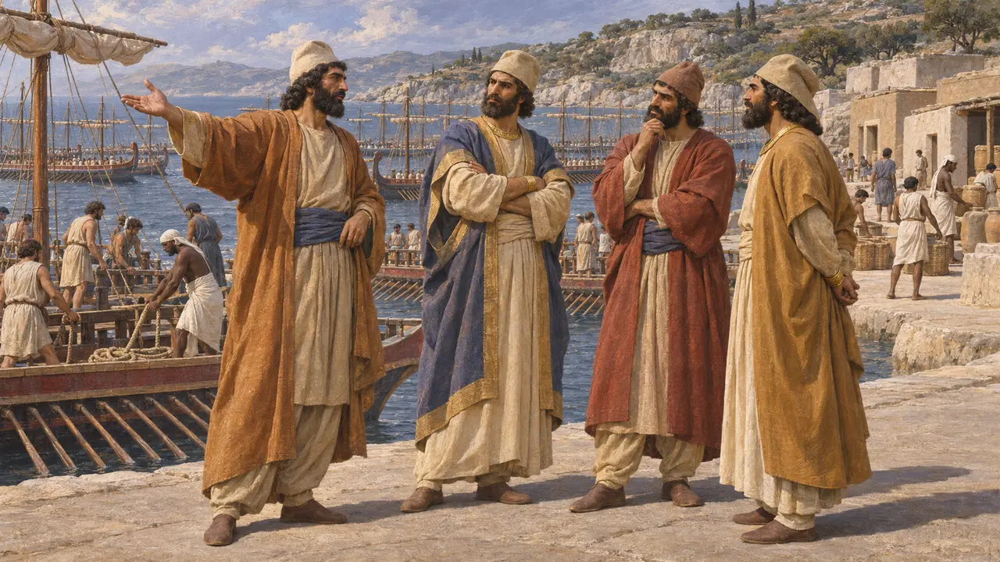
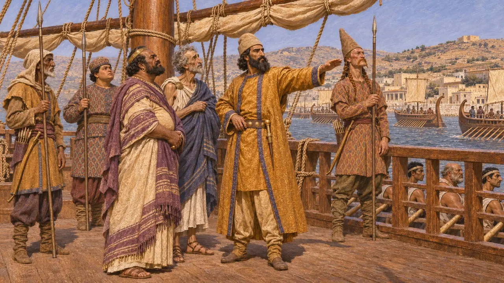
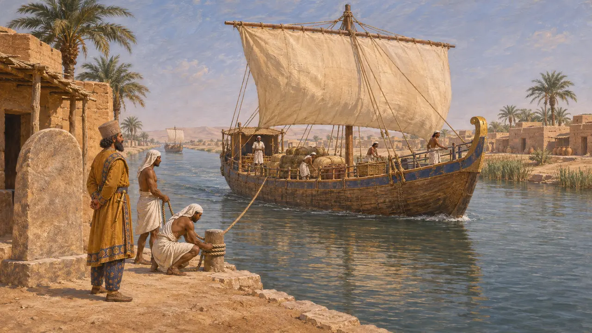
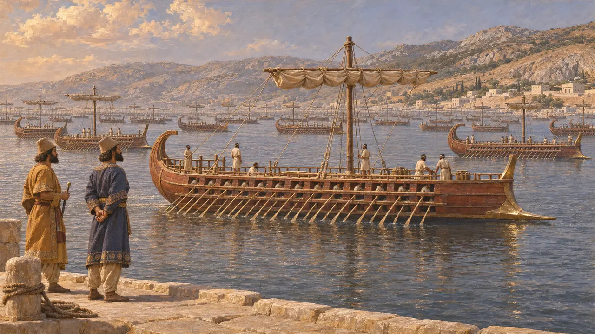
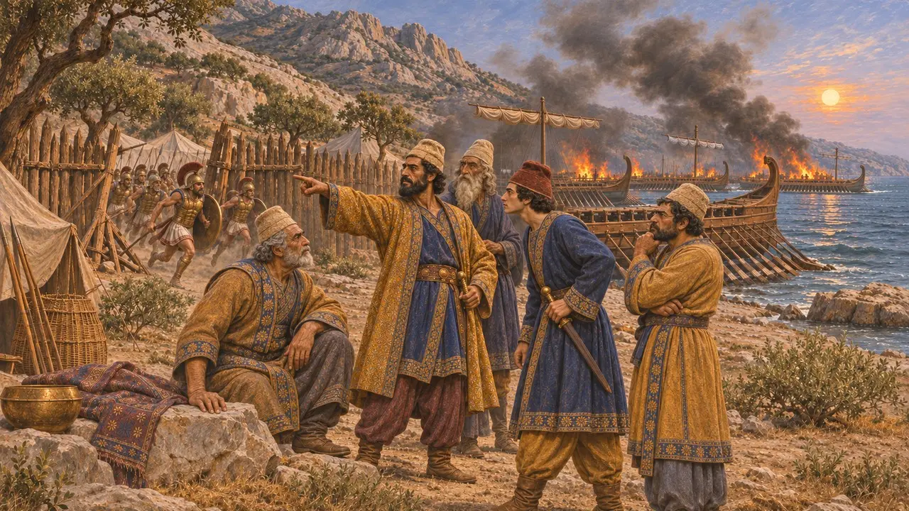

Admirals of the King's fleet
Persian commanders of the subject navies, about 499-479 BCE
In the game: Level 10: The Hot Gates
The warships of the Persian kings were supplied and crewed mostly by subject peoples: Phoenicians, Egyptians, Cypriots, Cilicians, Ionians and Carians. Command over these contingents went to Persian nobles, often close kin of the King, appointed for a campaign. They led the fleets at Lade in 494 BCE, in the crossings of 490 and 480 BCE and at Artemisium and Salamis, until the Greeks burned the ships beached at Mycale in 479 BCE.
In the game: The game presents the office through Ariabignes, Achaemenes and the commanders of the sea battles. Historically there was no single standing post: Herodotus names four admirals for 480 BCE and different men in other years.

Princes over the subject fleets
Ancient accountHerodotus names four admirals of Xerxes' fleet in 480 BCE. Two were sons of Darius, Ariabignes and Achaemenes, and the other two were Prexaspes son of Aspathines and Megabazus son of Megabates. Ariabignes led the Ionian and Carian ships and Achaemenes, who also governed Egypt as satrap, led the Egyptian ships, while the other two shared the rest. All four were high Persian nobles bound to the royal house.
Herodotus 7.97; 7.7

Ships, crews and fighting men
Ancient accountThe ships came from the King's subjects, and each contingent sailed under its own kings or city lords, such as the rulers of Sidon and Tyre or Artemisia of Halicarnassus. Herodotus says Persians, Medes and Saka served aboard every ship as fighting men. He insists that the native leaders were not true commanders but took their orders from the Persian admirals.
Herodotus 7.89-99

What the Persian record shows
In the recordPersian royal inscriptions say little about war at sea. Darius's stelae beside his canal from the Nile to the Red Sea record that ships sailed from Egypt to Persia by it, as he wished. An Aramaic customs account from Egypt dated to 475 BCE lists Ionian and Phoenician ships taxed at a royal port. Such texts show that the empire controlled and counted ships, but the admirals themselves are known almost only from Greek writers.
DZc; TAD C3.7

How large was the fleet
DisputedHerodotus gives Xerxes 1,207 triremes. Aeschylus, writing eight years after Salamis, gives a similar total. Many historians think the figure was inflated, or reflects the full levy on paper, and suggest a smaller fleet fought at Salamis after the losses to storms. Scholars also argue over whether the King kept a standing royal navy, as Wallinga proposed, or called up the subject cities' ships for each war.
Herodotus 7.89; Aeschylus, Persians; H. T. Wallinga, Ships and Sea-Power before the Great Persian War, 1993

Changing commands, 499 to 479 BCE
Ancient accountCommand was given for each campaign, not held for life. Megabates led the fleet against Naxos in 499 BCE, and Datis and Artaphernes led the crossing of 490 BCE. Herodotus says Ariabignes died in the fighting at Salamis. He also says that in 479 BCE the fleet at Samos under Mardontes, Artaÿntes and Ithamitres was beached at Mycale, where the Greeks stormed the Persian camp and burned the ships.
Herodotus 5.32-33; 6.94-95; 8.89; 8.130; 9.96-106
Sources
- Herodotus, Histories, books 5-9
- Aeschylus, Persians
- P. Briant, From Cyrus to Alexander, 2002
- H. T. Wallinga, Ships and Sea-Power before the Great Persian War, 1993
- B. Porten and A. Yardeni, Textbook of Aramaic Documents from Ancient Egypt, vol. 3, 1993
- Darius's Suez canal inscription, DZc